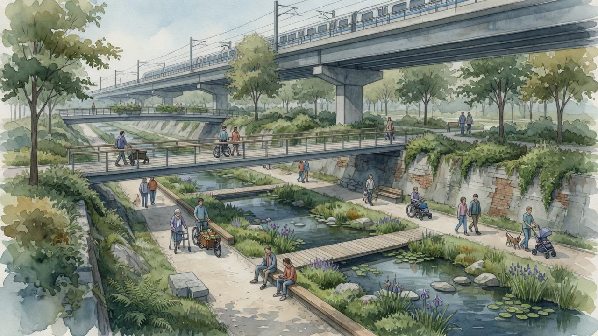

统筹研究 ≈43.6 km²
产业生态、三区两翼、命名与案例转译。
三层范围重点区域用地分区交通慢行蓝绿公共空间建筑更新项目AI 场景任务覆盖
主视觉是 9 公里遗产廊道、三个公共节点和可关闭的原点，不是等权矩形。本页离线、无远程资源。权威数字仍以 GeoJSON 与 metrics.json 为准。
廊道在中间，节点在廊道上，双翼在原点相交。虚线只表示临时范围。

统筹研究、总体设计、重点区域逐级传导，面积以公告文字为准，几何为临时矩形。
产业生态、三区两翼、命名与案例转译。
一脉三站、用地概念分区、12 项更新。
众智园 / 原点 / 大钟寺三处详细概念。
每个单元写清锚点、先行动作和停止条件。

清河接口 + 受控测试。无安全官则停测。
人字广场 + 转化街。文保未过下线单条。
共用厅可先行。四象限步行待官方 polygon（#1029）。
科研 / 公园 / 居住概念分区，完整覆盖提交边界。

9 km 连续步行优先；三条东西缝合；道路中线为示意。

遗产绿廊是骨架，清河与小月河是接口，不是装饰色块。

生成剖面仅作叙事，不是测绘。
基底示意约 72.3 万 m²，只表达保留 / 更新 / 新建分级，无地块级拆改留。
12 张实施卡：主体、依赖、验收、停止。近期只做可逆试点。
园林主体。可达≥90%。两次不达标降级。
水务/园林。水质超阈值停测。
园区+街道。每季一场公益。
校区共治。非数字预约。
可关灯。噪声超阈值即关。
三入口。争议下线单条。
待官方 polygon。否则只做标识。
公益位≥10%。不可负担则调配比。
公益时段≥20%。审计失败断网。
连续无障碍。障碍未清则停段。
日历公开。预案不过则取消。
年审计。不通过停自动化。
12 张完整卡 + 3 个测试。详见 proposal.md 表格。
原点。人工审核。不采轨迹。
众智园。无安全官停测。
公益配额≥20%。
纸图并行。默关闭定位。
大钟寺。赞助公开。
只发聚合环境数据。
非数字预约。价格公示。
可撤回。15 日答复。
不做商业画像。
纸质报名。至少一场公益。
三种入口。年审。
不采人脸。可关灯。
公告 1.3–1.5 与 agent.1–6 均在正文有对应卡片，而不是点名清单。
| 任务 | 正文位置 | 停止/边界 |
|---|---|---|
| agent.1 VI | 统筹研究 / assets/brand | 不冒充政府标志 |
| agent.2 案例 | 6 行转译表 | 不承诺合作 |
| agent.3 场景 | 12 卡 + T1–T3 | 人工复核 |
| agent.4 地标 | L-01–L-04 | 荣誉分栏 |
| agent.5 叙事 | 四刻度 + 导览 | 年审内容 |
| agent.6 运营 | Q1–Q4 + 漏斗 | 可退出 |
每条公开事实在 sources.json 登记发布者、URL、日期、许可与限制。本页不加载 CDN、远程地图、外部字体、iframe 或 fetch。